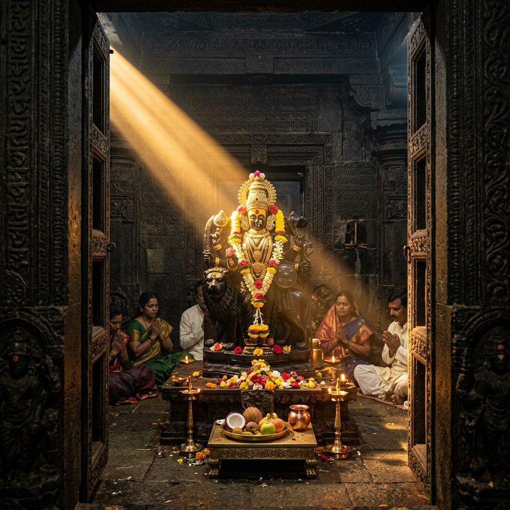
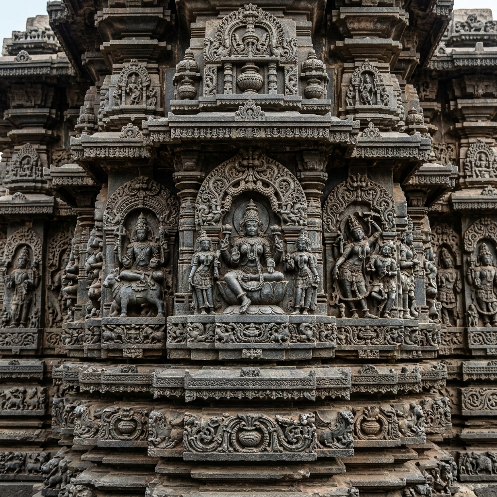
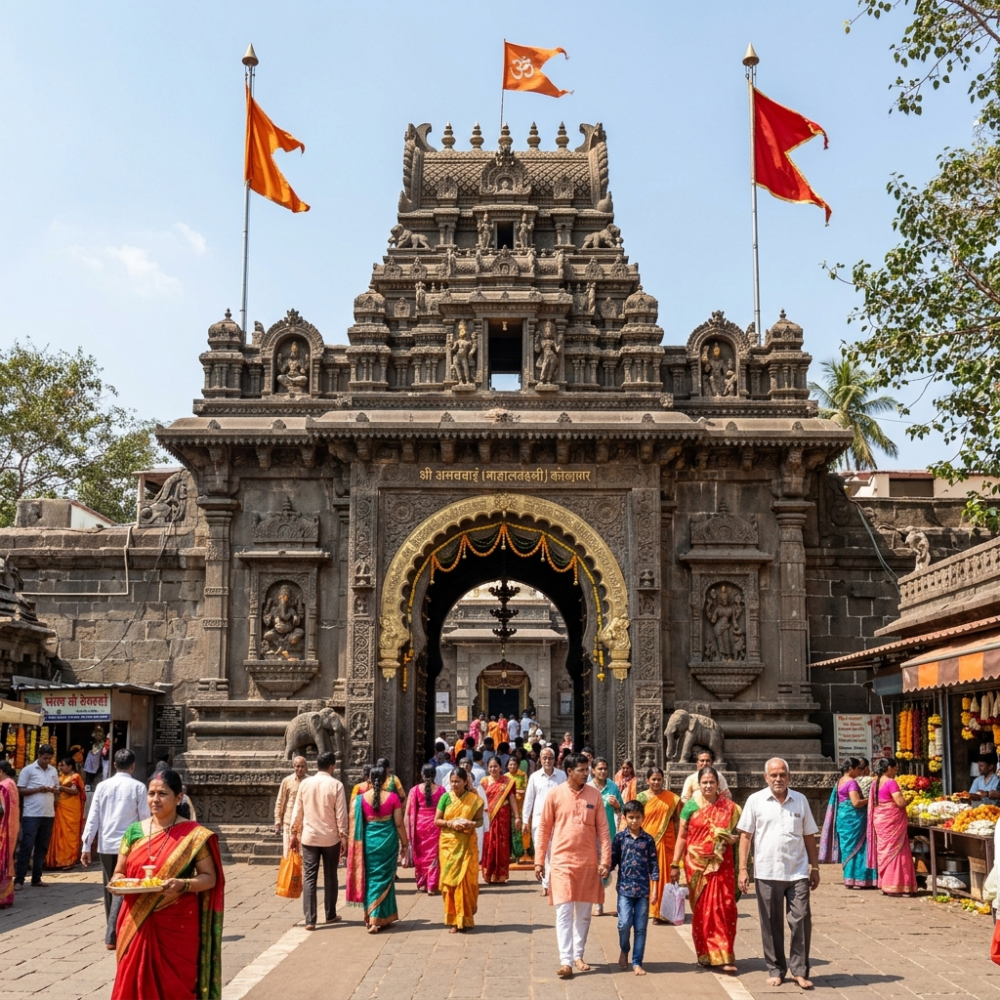

About Temple
Mahalaxmi Temple is one of the important Shakti Peeths in India and is dedicated to Goddess Mahalaxmi. Believed to be over a thousand years old, it has been a major spiritual center in Maharashtra for centuries.
The temple is renowned for its ancient stone architecture, beautifully carved idol of Goddess Mahalaxmi, and the famous Kirnotsav phenomenon where sunlight falls directly on the idol.
History
1000+ Years Old
Status
Shakti Peeth

Major Attractions
Explore the unique architecture and phenomena of the temple.




Travel Guide
Comprehensive travel routes to reach the temple from Mumbai and Pune.
Option 1: Rail Travel
Kolhapur Railway Station (CSMT Kolhapur) is well-connected to Mumbai and Pune. The temple is just 2 km away from the station, with autos and local cabs readily available.
Cost: ₹150 – ₹500 ApproxOption 2: Direct Drive
A smooth drive along the NH 48 highway. It is around 230 km (4-5 hrs) from Pune and 380 km (7-8 hrs) from Mumbai. Paid vehicle parking is available near the temple zone.
Cost: ₹1,500 – ₹3,000 ApproxOption 3: Express Bus Transit
Frequent state transport (MSRTC) and private AC sleeper buses connect Mumbai/Pune to Kolhapur city bus stand daily.
Cost: ₹500 – ₹1,200 ApproxEssential Information
Everything you need to know for a smooth visit.
Stay & Food
Kolhapur offers excellent hotel options, budget lodges, and temple trust bhaktaniwas lodging. Try local Kolhapuri cuisines including Misal Pav and traditional veg meals.
Entry & Cost
General entry for darshan is completely free. Special quick-darshan passes, abhishek poojas, and rituals are available at the official trust offices for a small fee.
Best Time
October to March is ideal. Navratri festival is celebrated with grand decorations and energy. Early mornings are best to enjoy a peaceful, crowd-free visit.
Location & Coordinates
Kolhapur, Maharashtra, India